projects
here's a rough list of all of the things that i have done through my development career!
toontown: corporate clash - october 2020 to present
game website: https://corporateclash.net/i've been doing volunteer work for the toontown corporate clash crew for a very long time. i joined the crew as a game moderator starting back in october 2020, then eventually joined the game design team january 2021. from there i applied and became a game dev around may 2021, and am now a part of the team's technical leadership as of october 2021.
i do a lot of work for the team these days. aside from managing assignments and projects for the team's game developers, i also love to handle full-stack work on the game side of development, such as developing various tools for designing cutscenes (see the embedded tweet), or other features which I can't talk about just yet unfortunately!Even short cutscenes in Toontown: Corporate Clash can take several hours of iteration to get just right.
— Toontown: Corporate Clash (@CorporateClash) April 15, 2022
Over the period of a few days, a Technical Lead Assistant, Main, developed a tool to create complete cutscenes, allowing lightning-fast iteration for cinematic development! pic.twitter.com/vnKomOYNO0
our game's engine, panda3d, is a little bit messy. the majority of the engine and dev work overall is python across the full stack (python for game development is about as unperformant as you would expect), but i can say for sure that working with the crew has given me massive insight onto how development pipelines function. i've been able to make several amazing connections with several wonderful creative people, and have most certainly made life-long friends with em.
wondertown - may 2022
github: https://github.com/thejanjan/wondertownme and my online friends bonded over a certain puzzle game series: Wonderland. created by midnight synergy, this shareware masterpiece was a fantastic, colorful sokoban with several elements that kept the game light-hearted and super fun. my friends and i still LOVE the game series, so i figured it was high time one of us made it so we could play the vast suite of custom levels in multiplayer, right?
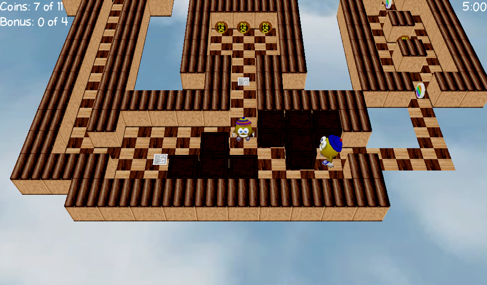 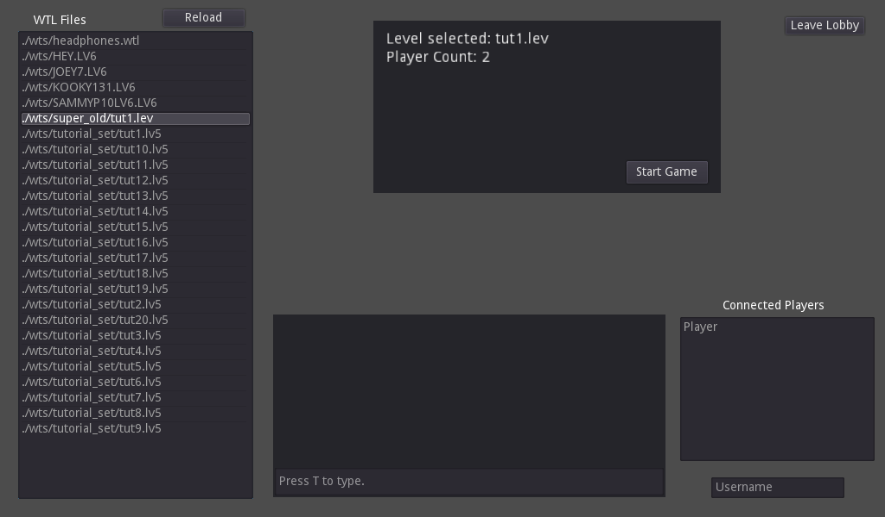
this godot project is still in its infancy with lots of bugs -- but the system it boasts are wildly successful for creating distributed elements within a puzzle game, which i am very proud of. i consider it to be a testament to how my experience with creating multiplayer games and distributed systems has expanded over the years, especially since this was my first godot project ever (!!!).
wings beneath my fur - april 2020 to present
i've always been overly fascinated by JRPGS, the absurdities of earthbound and mother 3, the active battles of chrono trigger, the exploration of trauma in OMORI, so on and so forth. all of these games have had a massive impact on me as a person, and it has always been a dream of mine to present my own stories and morals through a similar medium.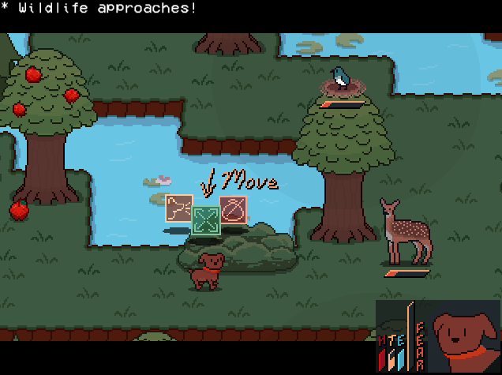 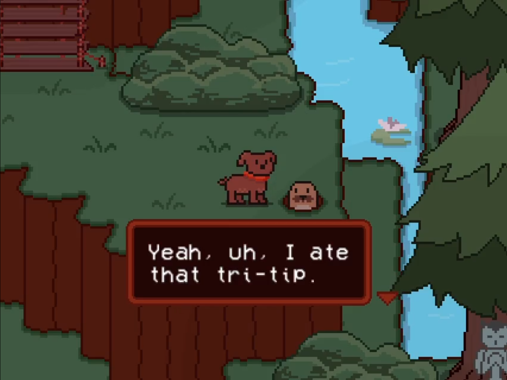
meet rex, a canine left at a bus stop by his owners. out of curiousity, he enters the neighboring forest, and discovers several cultures and developed animal societies ignored by humankind. the elders of these species are upset by the arrival of rex; canines are no more than hunter-gatherers for the avians and felines, yet rex is shown to be more 'awake' than even the presiding canine elder.
nothing motivates a living being more than their own fear; the fear of the unknown forbids us from learning about what may hurt us, the fear of rejection ensures we stay afloat in our social spaces, so on and so forth. wings beneath my fur serves as an exploration into both the silly fears and the real terrors that we may experience.
after all, there is nothing more terrifying than a truly fearless animal... wouldn't you agree?
golf 2 - july 2021
my friends and i made a ridiculous gamejam game for gmtk2021. after eon's of no updates, washed-up Golf™ World Champion Hudson Buttermilk seeks out a new game...play here: https://micman27.itch.io/golf-2
github: https://github.com/thejanjan/gmtk-2021
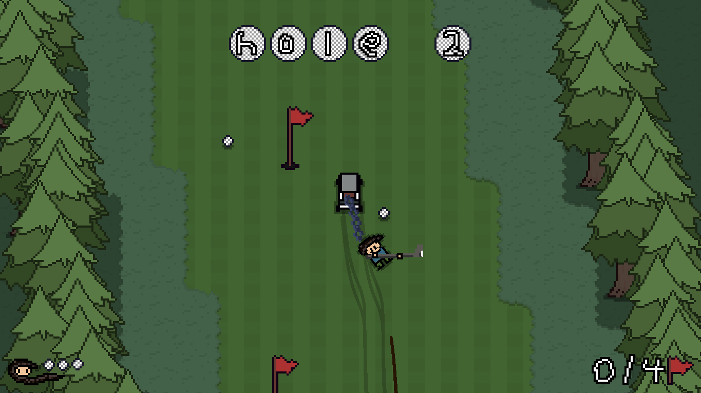 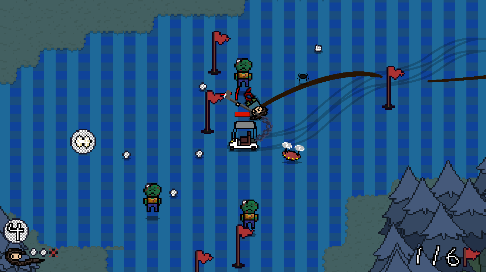
meet the world's first golf roguelike. playing as a golf kart, Hudson is chained to you, brandishing a golf club that allows you to get only the most impressive of golf shots. after making several sufficient putts, you can move to the next hole. each stage contains several powerups to help you deal with the onslaught of golf-based enemies.
our team placed #116 overall, from #5,724 entries. fun was a solid #81th place!
gamemaker projects - 2008 to 2021
i honestly can't remember when i started using gamemaker. but it was such a long time ago, that's for sure.to tell you the truth, i have an unbelievable amount of projects over this decade. i was always super excited to try out new things at this time, and so i would get several starts on several potential projects just to learn something new... but then never do the actual difficult part of game development (fleshing a thing out to completion).
so in lieu of that, i'll at least present a few things that i do have catalogued still. apologies for no download links.
(and for reference, i was born in 2002, so a lot of these were made when i was really quite young!)
various platformers (201X to 2016)
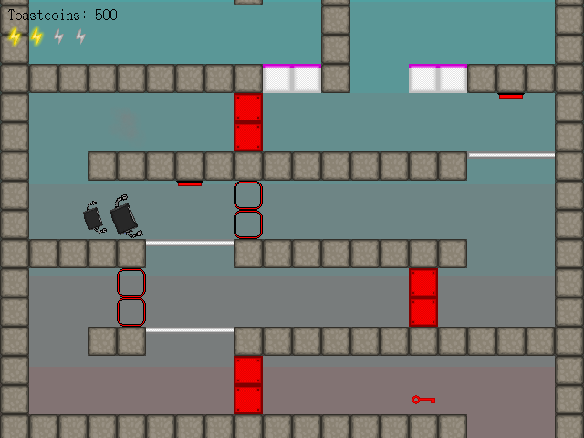 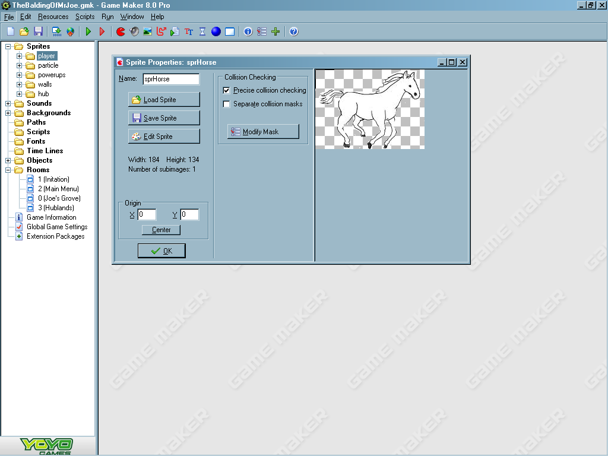i was a big fan of the platformer games that the folks in my community would develop, to the point that i really was eager to try and create games inspired by them. while for a long time most of my projects were either low-quality or weren't very successful, a lot of my friends started to find a lot of investment in my own work, which was satisfying.
epigam dungeons (november 2014)
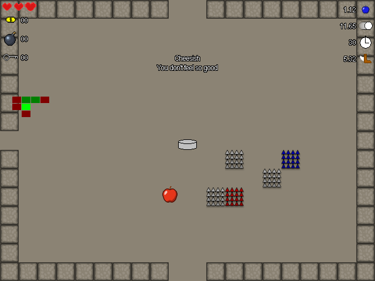 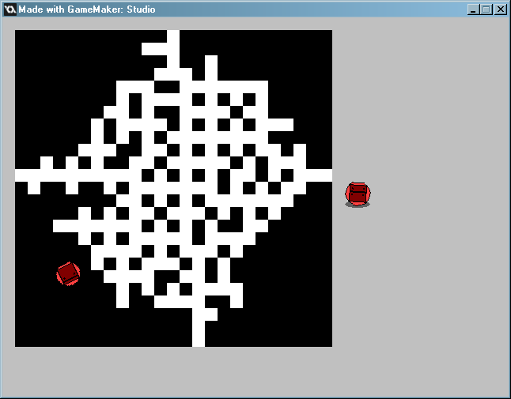probably my first time delving deep into dungeon generation and roguelike development. i found binding of isaac to be a very interesting and addicting experience, so i attempted to make a game to imitate it.
it was really difficult to get things going, but i really enjoyed working on the dungeon generation; i was pretty much hooked on procedural generation and randomness design going forward.
protect the orb (december 2014)
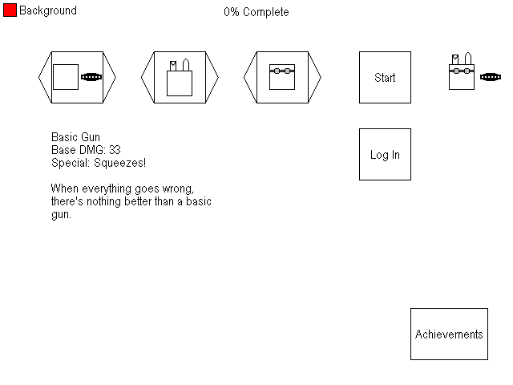 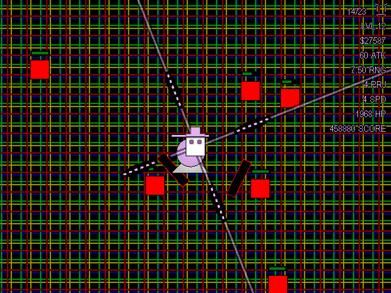an arcade-based shoot-em-up. weapons and accessories are chosen from the menu screen as shown, and you then have to use these weapons while levelling up and upgrading your own stats to deal with the increasing enemy horde.
i was a big fan of my upgrade and equip system at the time, all of the weapons i made felt pretty unique, and certain hat/glasses combos would synergize in neat ways.